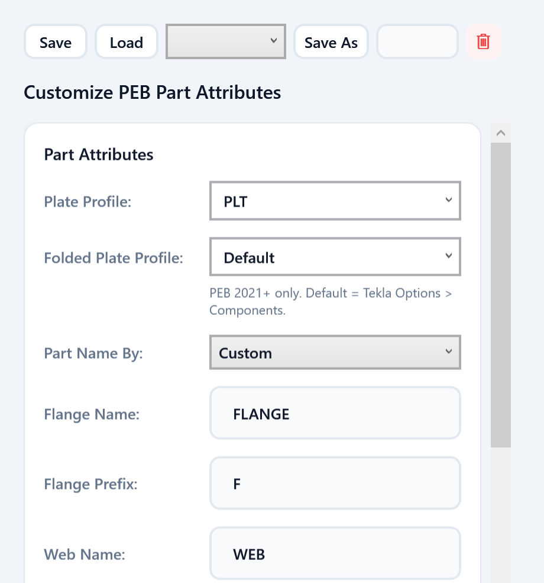
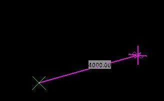

PEB Tools VN v1.3.23 — có gì mới
Bản 1.3.23 phát hành ngày 21/09/2026, gom các thay đổi kể từ bản 1.3.19: chọn profile bản mã ngay trong Settings, đường gióng kèm độ dài khi chọn điểm vẽ, gói cài đặt cho Tekla 2021 trở lên nay cài được tới Tekla 2026, cùng cửa sổ Settings gọn hơn.
Tóm tắt nhanh
- Chọn Plate profile / Folded plate profile ngay trong Settings — áp dụng khi vẽ mới, khi Update và khi xuất file attribute.
- Đường gióng kèm độ dài chạy theo chuột khi chọn điểm vẽ, giống PEB Member gốc của Tekla.
- Gói cho Tekla 2021 trở lên cài đặt được trên Tekla 2021 – 2026 (trước đây tới 2024).
- Cửa sổ Settings gọn hơn.
1. Chọn profile bản mã ngay trong Settings
Cửa sổ Settings có thêm hai ô Plate Profile và Folded Plate Profile:
- Plate Profile — tiền tố profile bản mã (PL, PLT, BPL, FL, FPL…) dùng cho bản bụng và bản cánh.
- Folded Plate Profile — tiền tố riêng cho bản cánh gập.
- Danh sách lấy từ catalog của Tekla đang mở; để Default thì theo cài đặt trong Tekla Options.
- Lựa chọn được áp dụng khi vẽ mới, khi Update member đã vẽ và khi xuất file attribute.
Lợi ích: profile bản mã đúng tiêu chuẩn công ty ngay từ lúc vẽ, không phải mở hộp thoại PEB chỉnh tay từng member.
⚠️ Tính năng này chỉ có tác dụng với Tekla dùng lõi PEB 2021 trở lên. Trên Tekla 2016 – 2020, lõi PEB cũ không có hai tuỳ chọn này nên sẽ bỏ qua.

Chi tiết từng ô trong cửa sổ cài đặt: xem bài hướng dẫn cài đặt.
2. Đường gióng kèm độ dài khi chọn điểm vẽ
Khi bấm Draw, sau khi chọn điểm đầu, một đường màu tím kèm độ dài chạy theo con trỏ tới vị trí điểm cuối — giống hệt khi vẽ bằng PEB Member gốc của Tekla. Nhìn được ngay chiều dài cấu kiện trước khi chốt điểm, đặt cấu kiện trực quan và chính xác hơn.

3. Cài được trên Tekla 2021 đến 2026
Gói cài đặt dành cho Tekla 2021 trở lên trước đây chỉ cài được tới Tekla 2024. Từ bản 1.3.23, gói này cài đặt được trên Tekla 2021 đến 2026. Nếu gặp lỗi khi dùng trên Tekla 2025 hoặc 2026, vui lòng báo qua nhóm Zalo để được hỗ trợ.
4. Cửa sổ Settings gọn hơn
Ô Profile Type cũ đã được bỏ, thay bằng hai ô Plate Profile và Folded Plate Profile ở mục 1 — ít ô hơn, đúng thứ cần chỉnh hơn.
5. Gói cài đặt và cách nâng cấp
| Tekla Structures | Gói cài đặt |
|---|---|
| 2016, 2017, 2018, 2019, 2020 | Gói riêng cho từng năm |
| 2021 – 2026 | Gói 2021_Higher |
- Ở mục Tải về bên dưới, chọn phiên bản Tekla đang dùng để tải đúng gói
.tsep. - Nếu đã cài bản cũ, gỡ bản cũ trong Tekla Extension Manager trước.
- Nhấp đúp file
.tsep, tick phiên bản Tekla rồi bấm Import. Gói được cài khi Tekla khởi động lần tiếp theo.
PEB Tools VN v1.3.23 — what's new
Version 1.3.23, released on September 21, 2026, rolls up everything since 1.3.19: plate profiles chosen right in Settings, a rubber-band line with its live length while picking points, a Tekla 2021+ package that now installs up to Tekla 2026, and a tidier Settings window.
At a glance
- Choose the Plate profile / Folded plate profile right in Settings — applied on new draws, on Update and when exporting attribute files.
- A rubber-band line with its length follows the cursor while picking points, just like Tekla's own PEB Member.
- The Tekla 2021+ package installs on Tekla 2021 – 2026 (previously up to 2024).
- A tidier Settings window.
1. Plate profiles right in Settings
The Settings window gains two fields, Plate Profile and Folded Plate Profile:
- Plate Profile — the plate profile prefix (PL, PLT, BPL, FL, FPL…) used for the web and flange plates.
- Folded Plate Profile — a separate prefix for folded flanges.
- The list comes from the catalog of the running Tekla; leave it on Default to follow Tekla Options.
- Your choice is applied to new draws, to members you Update and to exported attribute files.
Why it helps: plates carry your company's standard profile from the moment they are drawn — no more opening the PEB dialog to fix each member by hand.
⚠️ This only applies to Tekla versions with the PEB 2021+ core. On Tekla 2016 – 2020 the older PEB core has no such options, so they are ignored.
For every field in the settings window, see the settings guide.
2. Rubber-band line with length while picking points
After you click Draw and pick the start point, a purple line with its live length follows the cursor to the end point — exactly like drawing with Tekla's own PEB Member. You see the member length before committing the point, so placing members is more visual and more precise.
3. Installs on Tekla 2021 through 2026
The package for Tekla 2021 and newer used to install only up to Tekla 2024. From 1.3.23 it installs on Tekla 2021 through 2026. If you run into a problem on Tekla 2025 or 2026, please report it in the Zalo group.
4. A tidier Settings window
The old Profile Type field is gone, replaced by the Plate Profile and Folded Plate Profile fields from section 1 — fewer fields, and the ones that matter.
5. Packages and how to upgrade
| Tekla Structures | Package |
|---|---|
| 2016, 2017, 2018, 2019, 2020 | One package per year |
| 2021 – 2026 | The 2021_Higher package |
- In the Download section below, select your Tekla version to get the matching
.tseppackage. - If an older version is installed, uninstall it in Tekla Extension Manager first.
- Double-click the
.tsepfile, tick your Tekla version and click Import. The package is installed the next time Tekla starts.
6. Tải về6. Download
Chọn phiên bản Tekla Structures bạn đang dùng — nút tải sẽ tự trỏ tới đúng gói cài đặt.
Select the Tekla Structures version you use — the download button points to the matching package.
Nhóm Zalo người dùng PEB MemberPEB Member user group on Zalo
Quét mã QR hoặc bấm nút để vào nhóm: hỏi đáp khi sử dụng, báo lỗi và nhận thông báo bản cập nhật mới.
Scan the QR code or use the button to join the group: usage questions, bug reports and new release announcements.
Cảm ơn bạn đã dùng PEB Tools VN! Góp ý và báo lỗi cho bản 1.3.23 xin gửi vào nhóm Zalo người dùng. Thanks for using PEB Tools VN! Please send feedback and bug reports for 1.3.23 to the Zalo user group.